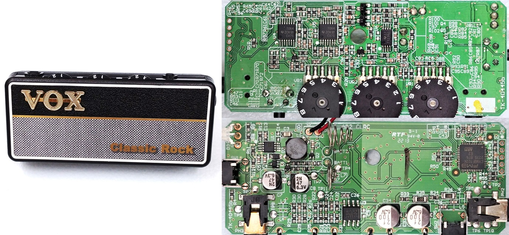
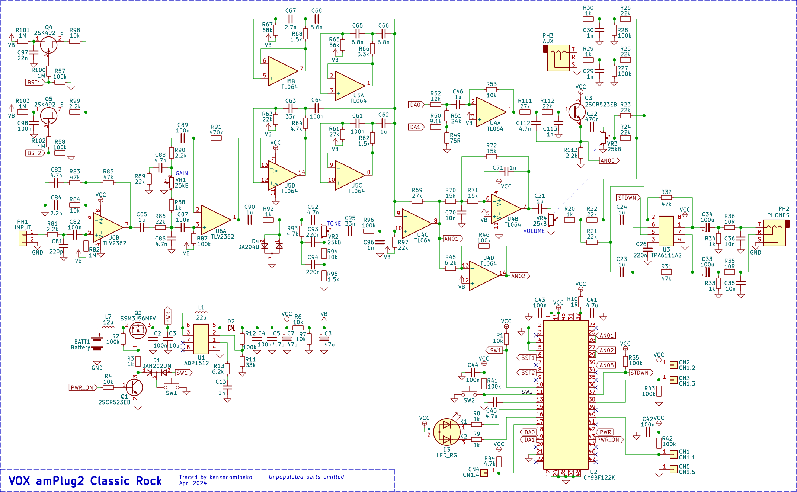
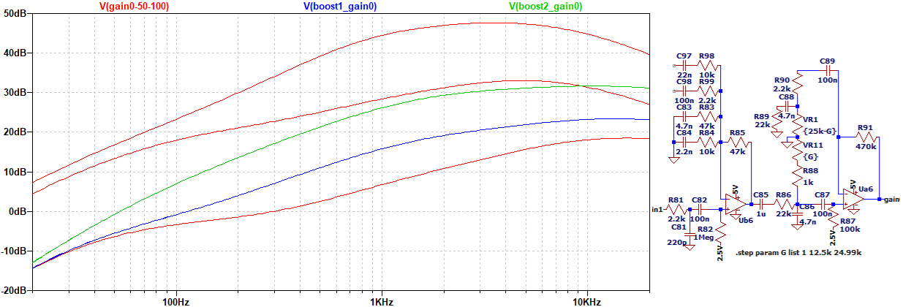
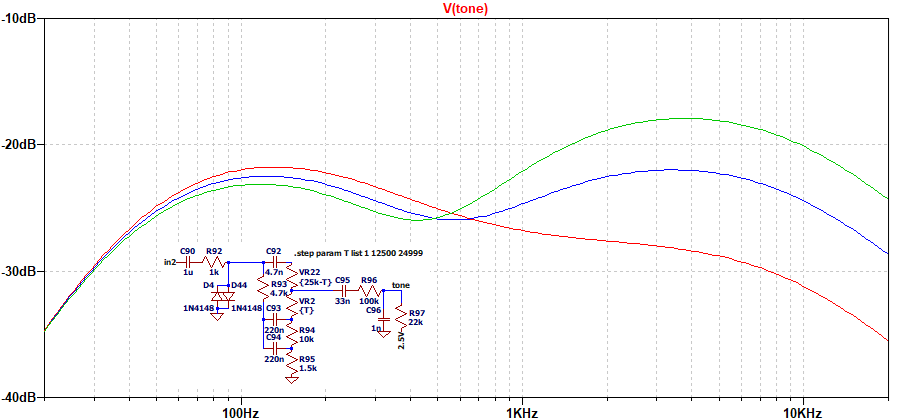
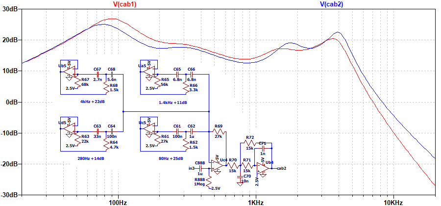

VOX amPlug2 Classic Rock 解析
2024年11月02日 カテゴリー：修理・改造・解析

VOX amPlug Classic Rockに引き続き、後継機種のamPlug2 Classic Rockを解析しました。KiCadデータ（基板画像入り）とLTspiceの回路図データはGitHubにあります。
▽回路図

旧機種と比べると増幅段が減り、クリッピングダイオードは一組となっています。また、シミュレーテッドインダクタはトランジスタからオペアンプに変わっています。最も大きな変化は、マイコンCY9BF122Kにより様々な機能が追加になったことです。電源スイッチはモード切替機能も兼ねていますが、うまい具合にダイオードやトランジスタで制御されています。
オーディオコーデックICを別途使うにはスペース・電力的に厳しいためか、A/D変換・D/A変換はマイコンで行われています。ADCは12ビット、DACは10ビットの分解能で、それぞれ2系統使い分解能を上げてあるようです。アナログフィルターをDACの後に入れてあるのは、ノイズ低減のためだと思われます。
▽シミュレーション
- 増幅部（ブーストオフ GAIN 0%→50%→100% ブースト1 GAIN 0% ブースト2 GAIN 0%）

非反転増幅で利得を1未満にできるタイプのゲインコントロールです。ブーストオフ時、形としては旧機種にやや似ているようです。
- TONE 0%→50%→100%

旧機種と同様のトーンスタックです。後段の高音域低下は控えめで、素直なコントロールのように見えます。
- キャビネットシミュレータ（cab1：旧機種）

旧機種の時には考えが及ばなかったのですが、スピーカーキャビネットに加え、真空管アンプのダンピングファクターによる周波数特性の変化が再現されていると思われます。
＜参考ページ＞
・【ナレッジ】真空管アンプのダンピングファクター影響
・超初心者のための真空管アンプの工作、原理、設計まで - 8 負帰還（NFB） ダンピングファクター